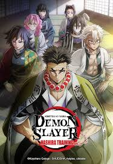

Naruto Shipudden
Setelah berlatih di luar negeri selama lebih dari dua tahun, Naruto Uzumaki pulang dan bergabung dengan Sakura Haruno untuk melawan organisasi jahat.

Attack On Titan
Ketika kampung halamannya hancur, Eren Yeager muda bertekad melawan Titan raksasa yang ingin memusnahkan umat manusia.

One Piece
Monkey D. Luffy berlayar bersama awak kapal Straw Hat Pirates untuk mengarungi Grand Line demi mencari harta karun One Piece dan menjadi raja bajak laut baru.
Demon Slayer
Usai keluarganya tewas dan saudarinya kena kutuk akibat serangan iblis, Tanjiro melakukan perjalanan berbahaya untuk mencari penawarnya dan membalas dendam para almarhum.